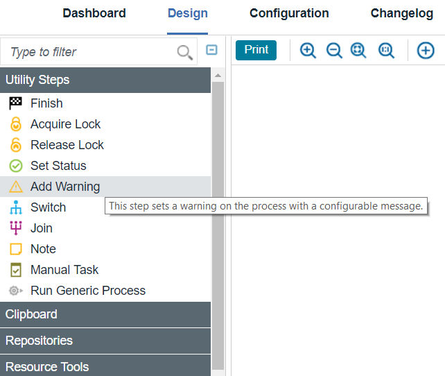
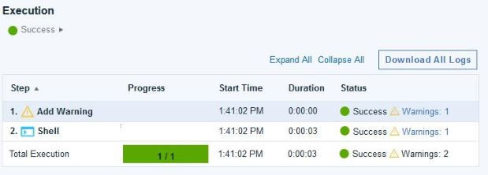

Adding deployment warnings
Warning statuses provide a way to easily identify deployments that require closer inspection that had been marked during the process execution.
Adding warnings
The warning message will be determined by the process author at design time.
- Through the
Add Warningplug-in step.This step requires a warning message as its only field. The warning message has a minimum length of 1 and maximum length of 2000. Empty string messages will be discarded.

- In the post processing script.
// post-processing script
var exit = properties.get('exitCode');
/* Set a warning
scanner.register('^Warning: ', function(lineNumber, line) {
properties.put('ucdWarning', line);
});
scanner.scan();
*/
if (exit == 0) {
properties.put('Status', 'Success');
}
else {
properties.put('Status', 'Failure');
}View process requests with warnings
Scan the request history to locate executions that have warnings set and easily trace the warnings back to their originating plug-in step. The history and execution log pages will display the status of the execution alongside a warning indicator with count of warnings. This indicator will only display if there are any warnings from child activities that have not been ignored. Users can click warning count to view the list of warning messages from the plug-in steps of the executed process activity.
The history page will display a Status column that shows
the execution status (Success or Failure) and also the count of warnings that had been set for that
process. No count will be given if no warnings were set.
shell with warning steps set a
warning message.
| Steps | Warning Messages |
|---|---|
| (application process (execution)) | "warningA, warningB" |
| 1. Install Component "myComponent" | "warningA, warningB" |
| __ i. myComponent | "warningA, warningB" |
| ____ A. myComponentProcess | "warningA" |
| ______ a. Shell with warning | "warningA" |
| ______ b. Shell | "" |
| ____ B. myOtherComponentProcess | "warningB" |
| ______ a. Shell with warning | "warningB" |
Success/Failure notifications include warnings
In addition to displaying the result status, the default deployment or process notification templates include the total count of warnings that have not been ignored. You have access to the warning messages if you choose to modify the default notification templates. Server upgrades will not modify existing notification schemes.
Behavior
Warnings set on plug-in steps are passed up to parent process. For example, if you have a
component process which uses the plug-in step Add Warning and this component
process is used in an application process, the warning would be available in the application process
execution log and history.
Warning messages are stored in the workflow trace. Each activity trace may contain a field
warningMessagecontaining the warning message if one is set. Workflow metadata will
contain a count of warnings generated for each execution context to allow accessing the warning
count without loading the workflow trace.
Activities can optionally ignore warnings from its child activities. An activity that can spawn child activities can be configured to ignore the warnings from its child activities. The UI has an option to ignore warnings from child activities. If the activity is configured to ignore warnings then any warnings set from child activities should not be included in the spawning-activity's execution log and process request history.
For example, a component process deployWithWarning will always set a warning
message. There is an application process appProcess that runs an Install Component step that runs deployWithWarning but ignores warnings. After
execution completion, the execution log and deployment history will show appProcess
and the Install Component step was successful with no warnings. However if the
execution log is expanded, deployWithWarning will show successful with 1
warning.
- Run Generic Process
- Run Generic Process for Each Affected Resource
- Run Component Process
- Run Application Process
- Run Operational Process for Multiple Components
- For Each Agent
- For Each Tag
- Run Process for Each Version
- Install Multiple Components
- Install Component
Existing History and Execution Log
The existing process request history and execution logs are not affected as they will not have
the new plug in step Add Warning and post-processing script actions.